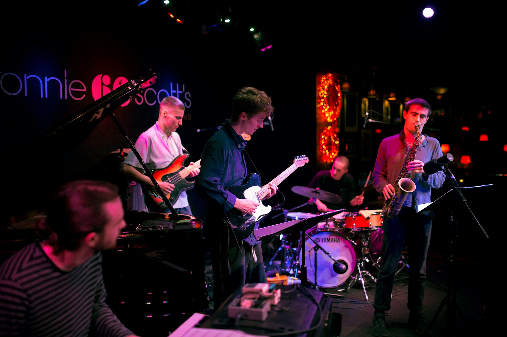

Joe Elliott
Saxophonist
A product of London's vibrant jazz scene, Joe Elliott came up through Junior Royal Academy of Music and Tomorrow's Warriors before going on to study jazz saxophone at Trinity Laban under the mentorship of saxophone great and Jazz Messengers graduate Jean Toussaint.
Since graduating, Joe has built a reputation as a captivating and versatile performer, playing at many of the UK's most celebrated venues — from intimate rooms like Ronnie Scott's, Pizza Express Jazz Club Soho, and the 606 Club, to larger spaces such as Royal Festival Hall and Wembley Stadium (Coldplay Music of the Spheres Tour, 2025).
From 2021 to 2025, Joe served as Artist in Residence at Morocco Bound, London, helping to establish the then-emerging venue as a new staple of the London jazz scene. Joe has recorded a range of albums including with bands Sudo, Where Pathways Meet, and Soft Power.
Now based in the New York City area, Joe is continuing to expand his practice beyond the London scene.
Photos

Ronnie Scott's Ghost Notes
Ghost Notes
 Morocco Bound
Morocco Bound